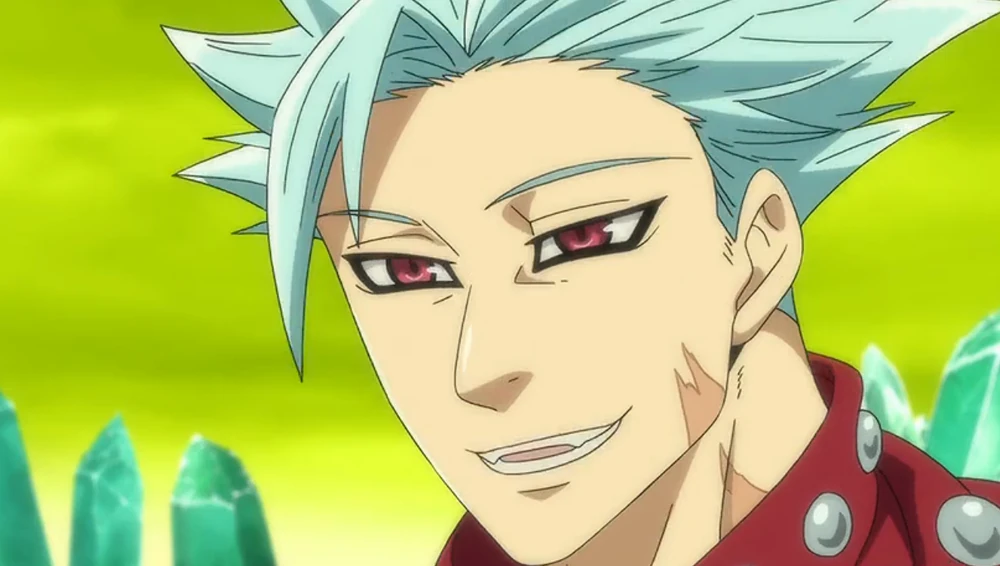

Ban - El Pecado de la Codicia
Pasado: Nació en el pueblo pobre de Ravens, con una infancia difícil marcada por el maltrato y la necesidad de robar para sobrevivir. Conoció a Zhivago, quien fue como un padre para él.
Los Siete Pecados Capitales: Fue reclutado por Meliodas tras coincidir en prisión. Después de la disolución del grupo, permaneció encerrado en Baste Dungeon.
Evolución: Tras pasar un tiempo en el Purgatorio, su fuerza física y resistencia aumentaron drásticamente.
